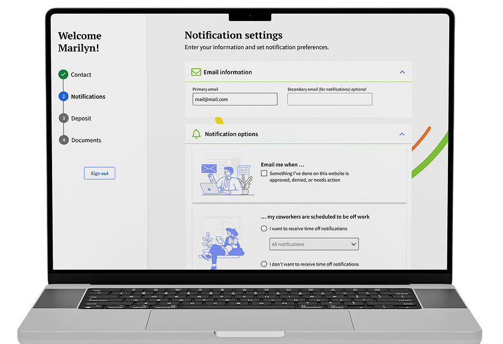
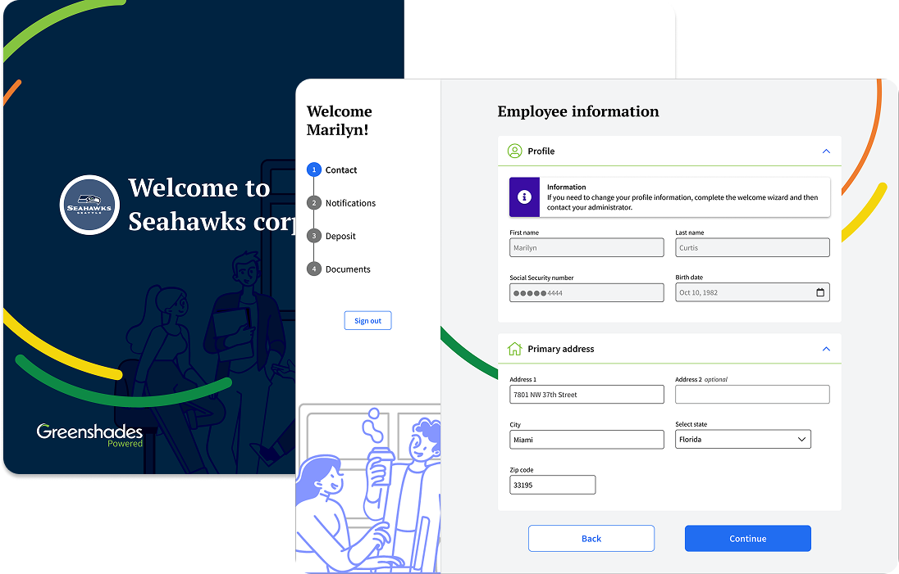
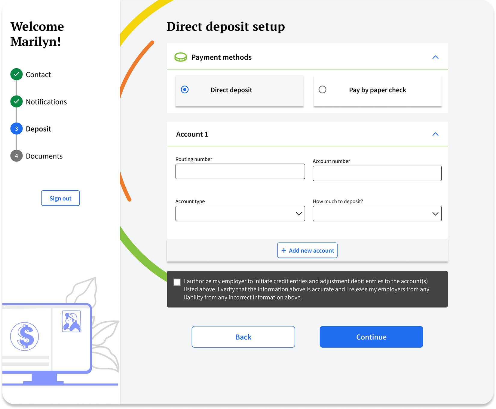
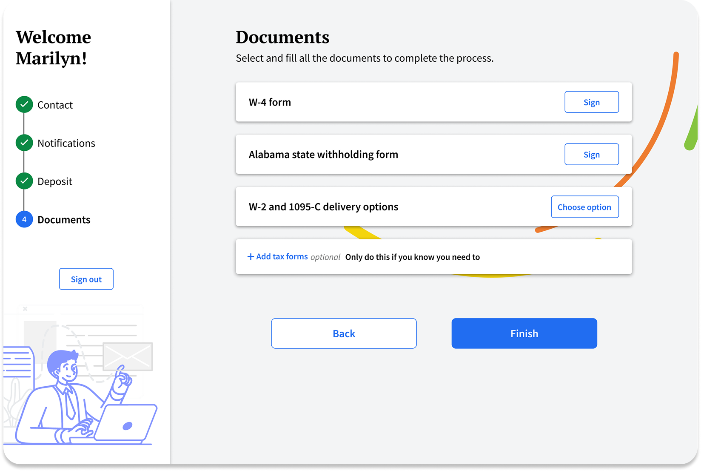
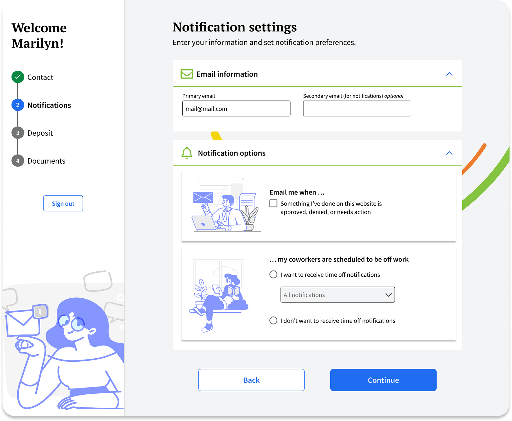
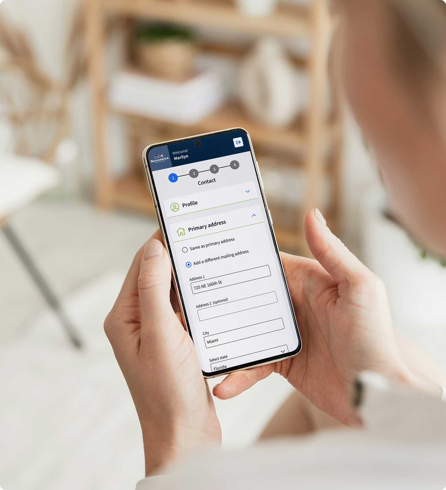
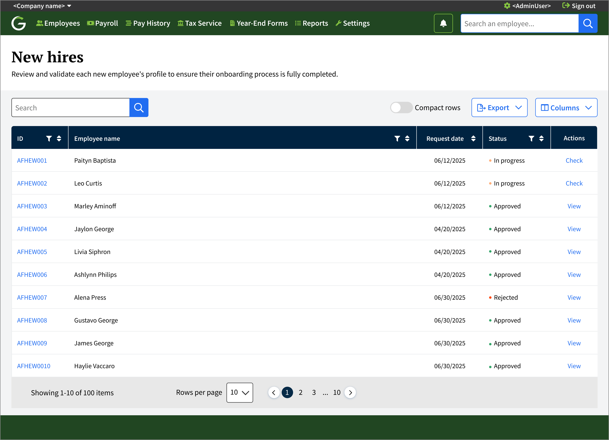

New Hires Onboarding
A user-friendly onboarding process for employees — reducing time to complete from 5 days to 2, and increasing admin approval speed by 40%.

Problem Statement
New employees need to fill out their personal info, get verified through services like E-Verify, get enrolled in benefits, and check all the boxes for employee safety before they can ever receive their first paycheck. Without a centralized place to handle all of this, admins get messy data, missing files, and headaches that slow everything down.
What we needed to solve
Cut down the back-and-forth between admins and employees by letting employees fill in their own information directly, so admins can jump straight to reviewing and validating it.
Give employees a smooth, self-guided experience so they can complete the whole onboarding process on their own, without support calls.
Help admins keep an overview of new hires to track the statuses and progress of each scenario.
What success looked like
Break the onboarding process down into simple, digestible steps that don't feel overwhelming.
Build a clean, intuitive UI that feels great on both desktop and mobile.
Reduce the time admins spend checking and validating new hire onboarding status — replacing manual follow-up with a centralized view of each employee's progress.
My Design Journey for This Project
I leveraged AI tools to analyze onboarding requirements, summarize stakeholder feedback, identify common friction points, and generate draft personas.
Discover & Define
Before designing anything, I needed to understand the real experience of going through onboarding — from both sides. I conducted interviews with 11 employees across different roles and seniority levels, combining those findings with analytics data and support ticket analysis to identify the most common friction points.
Interview Insights
Both HR teams and employees described onboarding as fragmented. Information lives across emails, PDFs, HR systems, payroll software, benefit portals, and verification services — with no single place to track what's been completed or what still needs attention.
"I never knew which link I was supposed to use next."
Many new hires weren't sure if they had finished onboarding or if additional tasks were waiting. Without a clear progress indicator or completion summary, employees would close the browser assuming they were done — leaving critical steps incomplete.
"I honestly thought I was done."
HR spends significant time emailing, calling, and reminding employees to complete tasks. This manual follow-up loop created bottlenecks, delayed first-day readiness, and pulled HR staff away from higher-value work.
"Half my job is sending reminder emails."
Many employees complete onboarding on their phones while commuting or between other responsibilities. The existing experience wasn't designed for mobile — small tap targets, non-responsive layouts, and multi-step forms that timed out caused high drop-off rates on mobile devices.
"I started on my phone and gave up."
Opportunity Areas
Based on these interview findings, the strongest UX opportunities are:
Product Design
Design for Employees
Employees can save and continue the process when they have the time, without losing information already entered. They have access via desktop, tablet, or mobile.

Strategy
Instead of presenting everything at once, I broke the onboarding flow into smaller steps to reduce cognitive overload and help users understand exactly where they are and what's left to complete. Since onboarding involves sensitive and important information, I needed to feel trustworthy, organized, and easy to digest — I expanded row components to reduce the amount of data on screen at once and save time for responsive design.




Mobile-First onboarding experience
- Employees often complete onboarding outside the workplace, so the experience was designed mobile-first to support completion on any device.
- Long forms were divided into manageable sections with progressive disclosure to reduce fatigue and improve completion rates.
- Form fields, navigation, and progress indicators were optimized for touch interactions across smaller screens.
- A consistent design system reinforced familiarity across desktop, tablet, and mobile devices.
Design for Managers
The administrator experience provides full visibility into employee onboarding progress and enables HR teams to review, approve, or reject submissions from a centralized dashboard. Approved employees are automatically onboarded and granted access to their benefits and pay information. If a submission is rejected, employees receive clear feedback and can quickly update and resubmit their information.

Instead of relying on emails or manually checking documents, employers can...
Track onboarding progress step by step.
See which sections are completed or still pending.
Approve or reject employee information.
Check all the documentation in one place.